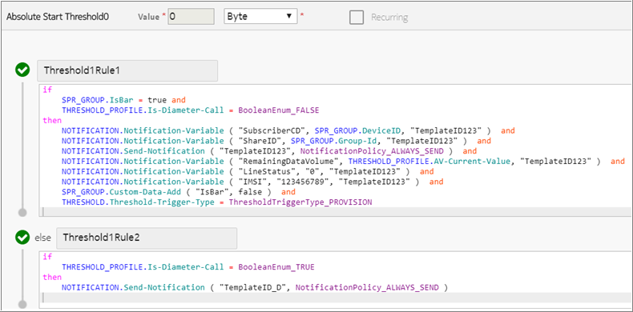
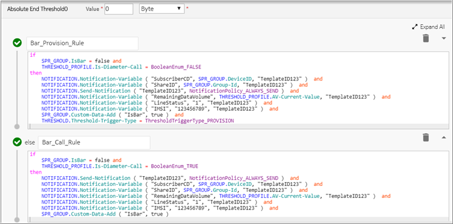

This feature provides information on notification for following cases:
-
Devices are barred or unbarred based on certain connectivity criteria.
-
Volume Threshold (VT) notifications sent from threshold.
-
Expiry Threshold (ET) notifications sent from lifecycle.
-
AutoCharge (AC) custom data has the value disable. This indicates that the group has not subscribed to the auto-charge feature.
-
Provisioning interface make changes to the AV with Charging Service, AV with Charging Service and CAP, Bucket and Account.
This feature is applicable only to Absolute from Start (AFS) or Absolute from End (AFE) threshold and does not work for percentage thresholds. That is, the provisioning gateway can trigger threshold actions only for AFS and AFE thresholds but not for percentage thresholds.
Bar and unbar notification
The subsequent blocks provide information on the bar and unbar notification cases.
Bar notification
Consider that a group has multiple devices associated and the group has not subscribed to the auto-charge feature. In this case, when the group subscription is exhausted, then the Aggregate View (AV) unused value is zero. NCC sends a notification to the operator provisioning system with well-defined parameters to take further action such as bar all the devices of group. The operator provisioning system triggers the PGW to bar all the devices of a group. This is the bar notification case for volume threshold.
Similarly, when a device lifecycle moves to a state which is barred from an unbarred state, NCC sends a notification to the operator provisioning system with well-defined parameters to take further action such as bar a single device in the group. The barred notification is sent when the device moves to the barred state. This is the bar notification case (expiry threshold) linked to the device lifecycle state.
Unbar notification
Consider that a group with exhausted subscription receives notification about the subscription status and refills its subscription due to which the AV unused value is increased to a non-zero value. NCC sends a notification to the operator provisioning system with well-defined parameters to take further action if absolute from start threshold is defined such as unbar all the devices of a given group. This is the unbar notification case for volume threshold.
Similarly, when a device lifecycle moves to unbarred state from barred state, NCC sends a notification with well-defined parameters to the operator provisioning system to take further action. This is the unbar notification case (expiry threshold) linked to the device lifecycle state.
Following are the important points related to bar and unbar cases:
-
The notification variables are different for all the cases.
-
It is assumed that the CCR-T is sent by PGW for all active sessions of devices are barred.
-
It is assumed that the CCR-I is sent by PGW for all devices are unbarred.
-
The barring and unbarring is done by the operator provisioning system. NCC only sends notification to the operator provisioning system.
-
A single notification is sent for each bar and unbar for group through threshold of AV with Charging Service, AV with Charging Service and CAP, bucket and account, that is sent to the operator provisioning system.
Notification variables for bar/unbar - Threshold
The following table provides information on notification connectivity when sent from threshold.
|
Parameter |
Description |
AV |
Bucket |
Account |
|---|---|---|---|---|
| Subscriber CD | This variable can be sent with the value of custom data available on Group/Device. This custom data can be created and set by the operator provisioning system. | Custom-Data (Owner DeviceId) on group/device level | Custom-Data (Owner DeviceId) on group/device level | Custom-Data (Owner DeviceId) on group level |
| Share ID | The Group Id/Device Id of the AV/bucket. | SPR_GROUP.Group-Id/SPR_DEVICE.Device-Id | SPR_GROUP.Group-Id/SPR_DEVICE.Device-Id | SPR_GROUP.Group-Id/SPR_DEVICE.Device-Id |
| Remaining data volume | The current value. In barred case, the value is 0, for unbarred case, the value is non-zero. |
THRESHOLD_PROFILE.AV-Current-Value THRESHOLD_PROFILE.AV-Unused-Value |
THRESHOLD_PROFILE.Bucket-Current-Value THRESHOLD_PROFILE.Bucket-Unused-Value |
THRESHOLD_PROFILE.Account-Current-Value THRESHOLD_PROFILE.Account-Unused-Value |
| IMSI | This is not sent by NCC. | SPR_DEVICE.IMSI | SPR_DEVICE.IMSI | SPR_DEVICE.IMSI |
| Line Status | This is not sent by NCC. | - | - | - |
Notification variables for bar/unbar - Lifecycle
The following table provides information on notification connectivity when sent from lifecycle of device.
|
Parameter |
Description |
Example |
|---|---|---|
| Subscriber CD | The custom data DeviceID attached to the first group fetched from device. If Custom Data is not present in first group, the value of this variable is null. | SPR_GROUP.DeviceID |
| Share ID | The Group Id of the first group fetched from device. | SPR_GROUP-Group-Id |
| IMSI | This variable is set by NCC with the IMSI of a device. Device must be configured with IMSI as one of the identifier. | SPR_DEVICE.IMSI |
| Line Status |
This variable can be filled with a static value. NCC provides the Device lifecycle status (old and new state) and validity time (if available with that state) as a notification variable. Example: Device lifecycle transitions from State A to State B, with action Send Notification action. NCC sends State A and State B validity time and State A and State B name. |
LIFECYCLE.From-State LIFECYCLE.To-State LIFECYCLE.Old-Validity-Time LIFECYCLE.Next-Validity-Time |
| Remaining data volume | This variable is not sent by NCC. | - |
Example: Threshold actions of AFE 0 is triggered when a subscription is removed and AFS 0 is triggered when another subscription is added to group
Here, AFE is Absolute from End and AFS is Absolute from Start. Note that the threshold action associated with the percentage based thresholds are not triggered from provisioning gateway.
Prerequisite:
Create a threshold profile group TPG1 with TP1 value 0 AFS having the Send Notification action. Create another threshold profile group TPG2 with TP2 value 0 AFE having Send Notification action. AFS is shown in the following figure:
AFE is shown in the following figure:
-
Ensure that you have created group, subscription, and notification profile.
-
Create an AV of type volume having TPG1 and TPG2 and accumulating charging service attached to group G1.
-
The Group G1 has subscriptions such that sub1 has a bucket with value of 100 bytes.
Perform the following actions:
-
Remove the subscription sub1.
-
Add another subscription to group.
Following is the result of the actions performed:
-
The Send-notification actions of AFE 0 is triggered when the subscription sub1 is removed.
-
The Send-notification actions of AFS 0 is triggered when a subscription is added.
Volume threshold notification variables
The following notification variables for Volume threshold notification are supported for all type of AVs, counter, bucket, account related notifications. These notification variables are applicable for threshold on group as well as device resources.
 Notice:
Notice:For more variables, see Generic notification variables.
|
Parameter |
Description |
Applicable for resources |
|---|---|---|
| Subscriber CD |
This variable is the custom data available on Group/Device. This custom data can be created and set by the operator provisioning system. For notification through THR, it can also be filled, if needed, with the DeviceId of that subscriber whose call has made the THR to reach. |
AV (all types), Bucket, Counter, Account |
| Share ID | The Group Id/Device Id. | AV (all types), Bucket, Counter, Account |
| Remaining data volume | The current value. Notification variables can be made available for both type of current value, that is, with and without reservation. | AV (all types), Bucket, Counter, Account |
| Original data volume | This variable is filled with a static value. NCC provides notification variables which is sum of initial values of each resource being accumulated for AV. | AV (all types), Bucket, Counter, Account |
| Threshold Type | This variable is filled with a static value. | AV (all types), Bucket, Counter, Account |
| Threshold | This variable is filled with a static value. NCC provides notification variable for threshold value. This is also applicable when the threshold is on individual bucket, counter, and account. | AV (all types), Bucket, Counter, Account |
| Expiry date of the line | This variable is filled with a static value. | AV (all types), Bucket, Counter, Account |
| Expiry date of the purchased data volume | This variable is filled with a static value or it can be mapped to a custom data. | AV (all types), Bucket, Counter, Account |
|
Parameter |
Example |
|---|---|
| Subscriber CD | Custom-Data |
| Share ID | SPR_GROUP.Group-Id/SPR_DEVICE.Device-Id |
| Remaining data volume |
THRESHOLD_PROFILE.AV-Current-Value THRESHOLD_PROFILE.AV-Unused-Value |
| Original data volume | THRESHOLD_PROFILE.AV-Initial-Value |
| Threshold Type | Custom-Data/Static |
| Threshold | THRESHOLD_PROFILE.Threshold-Value ( "ThresholdName" ) |
| Expiry date of the line | Custom-Data/Static |
| Expiry date of the purchased data volume | Custom-Data/Static |
|
Parameter |
Example |
|---|---|
| Subscriber CD | Custom-Data |
| Share ID | SPR_GROUP.Group-Id/SPR_DEVICE.Device-Id |
| Remaining data volume |
THRESHOLD_PROFILE.Account-Current-Value THRESHOLD_PROFILE.Account-Unused-Value |
| Original data volume | Custom-Data/Static |
| Threshold Type | Custom-Data/Static |
| Threshold | THRESHOLD_PROFILE.Threshold-Value ( "ThresholdName" ) |
| Expiry date of the line | Custom-Data/Static |
| Expiry date of the purchased data volume | Custom-Data/Static |
|
Parameter |
Example |
|---|---|
| Subscriber CD | Custom-Data |
| Share ID | SPR_GROUP.Group-Id/SPR_DEVICE.Device-Id |
| Remaining data volume |
THRESHOLD_PROFILE.Bucket-Current-Value THRESHOLD_PROFILE.Bucket-Unused-Value |
| Original data volume | THRESHOLD_PROFILE.Bucket-Initial-Value |
| Threshold Type | Custom-Data/Static |
| Threshold | THRESHOLD_PROFILE.Threshold-Value ( "ThresholdName" ) |
| Expiry date of the line | Custom-Data/Static |
| Expiry date of the purchased data volume | Custom-Data/Static |
|
Parameter |
Example |
|---|---|
| Subscriber CD | Custom-Data |
| Share ID | SPR_GROUP.Group-Id/SPR_DEVICE.Device-Id |
| Remaining data volume | THRESHOLD_PROFILE.Counter-Current-Value |
| Original data volume | Custom-Data/Static/0 |
| Threshold Type | Custom-Data/Static |
| Threshold | THRESHOLD_PROFILE.Threshold-Value ( "ThresholdName" ) |
| Expiry date of the line | Custom-Data/Static |
| Expiry date of the purchased data volume | Custom-Data/Static |
Example: VT notification for bucket with normal and CO instances
Auto-charge feature is turned off on group. Create the group and subscribe the bundle. Create device and add it to the group. Create the custom data - ExpiryDataLine and ExpiryDataPurchasedDataVolume for the group. Create the account, threshold, Charging Service, and Bundle. In the bundle, define a bucket with volume data of 300 byte. In the threshold profile, define AFS = 20. The VT notifications are sent based on the variables defined in the threshold profile as shown in the following figure.
Subscription expiry notification variables
The notification variables in the following table are applicable for the variables being created in the lifecycle of subscription from group as well as device.
The SPR_GROUP and SPR_DEVICE source context are available in the lifecycle for Send-Notification action only. These source context are provided in rules in lifecycle which means the custom data and other attributes of Group and Device can be used in rules as notification variables. If the subscription is attached to group, then SPR_GROUP context is available in the rule of lifecycle for the Send-Notification action. Similarly, when a subscription is attached to the device, SPR_DEVICE source context is available in the rule of lifecycle for the Send-Notification action
Notification variables for date of entity and periodic lifecycle of subscription are available. That is, for the subscription, the validity date is in entity lifecycle and end date in periodic lifecycle are available which can be used in rules with notification variables. When a notification is sent to end user using lifecycle, then the validity of their subscription can be informed.
Notice:The notification variables listed in the subsequent table are sample variables only and you can create custom variables based on your requirement.
For more variables, see Generic notification variables.
|
Parameter |
Description |
Behavior for Group subscription |
Behavior for Device subscription |
|---|---|---|---|
| Subscriber CD | This variable can be sent with the value of custom data available on Group. This custom data can be created and set by the operator provisioning system. |
SPR_GROUP.Device-Id Custom Data |
SPR_DEVICE.Group-Id Custom Data |
| Share ID | The Group Id of the subscription. | SPR_GROUP.Group-Id | SPR_DEVICE.Device-Id |
| Remaining data volume | This variable is not sent by NCC. It can be set to Null in notification template in NS or can be sent as a static value by charging or can be sent from any of the custom data at group. | Static/NULL | Static/NULL |
| Original data volume | This variable is filled with a static value. | Static value | Static value |
| Threshold Type | This variable is filled with a static value. | Static data | Static data |
| Threshold | This variable is filled with a static value. | Static | Static |
| Expiry date of the line | This variable is filled with a static value. | Static data | Static data |
| Expiry date of the purchased data volume | This is set to the expiry date of the group subscription. The end time of entity and periodic lifecycle of subscription, subscription creation time, can be made available as notification variable. |
For entity lifecycle:
For periodic lifecycle:
|
For entity lifecycle:
For periodic lifecycle:
|
Example 1: Entity Lifecycle for Subscription expiry notification
This example is designed to send notification using the Send Notification action. Send Notification Action 1 sends Validity Time of Active state, that is, 28 days timestamp as well as subscription creation time (see Entity lifecycle - preactive state). Send Notification Action 2 sends Validity Time of Active State (28 days) as well as Validity Time of Inactive state, that is, 2 days. Following is the generic transition from StateA to StateB with Send Notification action.
Transition - From: StateA To State: StateB Action: Send Notification ActionThe following parameters are used for ExpiryDataPurchasedDataVolume variable:
-
StateA Validity Time
-
StateB Validity Time
-
Subscription Creation Time
The subscription entity lifecycle has the preactive (Initial state), active, inactive, deactive (Barred) states.
Following is the configuration made for the group subscription entity lifecycle:
The preactive state has the following event.
Following is the event in active state.
Following is the event in inactive state.
Following is the event in deactive state.
Example 2: Periodic Lifecycle for Subscription expiry notification
This example is designed to send notification using the Send Notification action. Send Notification Action 1, Send Notification Action 2, Send Notification Action 3 sends Subscription Start Time, Subscription End Time, and Subscription Entity Lifecycle current state Validity Time.
For periodic lifecycle, the following parameters are used for ExpiryDataPurchasedDataVolume variable:
-
Subscription Start Time
-
Subscription End Time
-
Subscription Entity LifeCycle current state Validity Time
Following is the configuration made for the group subscription periodic lifecycle:
The preactive state transitions are as follows:
The notification event along with the rule defined in the active state is as follows:
The notify state is as follows:
The deactive state is as follows:
Notifications through northbound interface
NCC triggers notification when the northbound provisioning interface makes either of the following changes:
-
AV with charging service
-
AV with charging service and cap, bucket, and account
If a defined threshold is crossed when an AV is updated using the provisioning interface, then the notification action on the threshold of AV are executed. The threshold at zero is optional. However, if any threshold value is crossed and required configurations are done for that threshold, then NCC sends the configured notification action.
 Note:
Note:The threshold execution of threshold profile type ABSOLUTE_FROM_ZERO for account can be used at the time of provisioning. During provisioning, the ABSOLUTE_FROM_ZERO profile is considered irrespective of whether the account balance is increased or decreased. Only the send notification action of the threshold crossed is supported during provisioning.
The notification to end user is sent if the following conditions are met:
-
The available balance becomes equal to the threshold value.
-
The notification action is Send-Notification.
The following context variables can be used:
|
Context variable |
Description |
|---|---|
| THRESHOLD.Threshold-Trigger-Type | This variable can be configured in result action, when you want to execute the actions during only provisioning or only Diameter call. If this action is not defined, then THRESHOLD_TRIGGER_TYPE is treated for both Diameter call and provisioning and the notification is sent. |
| THRESHOLD_PROFILE.Is-Balance-Increased |
This variable can be used in a condition. During provisioning, there can be following scenarios:
|
| THRESHOLD_PROFILE.Is-Diameter-Call | This variable can be used in a condition. If the rule is executed on a call, its value is true and for provisioning its value is false. |
Following are some points related to notification through north bound interface:
-
Whenever AV/bucket is filled, then the Absolute From Start (ABS) Thresholds get triggered and whenever AV/bucket is being decremented, the Absolute From End gets executed. During provisioning, the behavior of ABS is different when compared to the Diameter call since during provisioning, ABS is triggered when AV/bucket is being filled whereas in Diameter call, the ABS is being triggered based on consumption from AV/bucket.
-
Reservation is not restricted even after sending bar notification through threshold.
-
Lifecycle AV/bucket update is treated as provisioning request.
-
For receiving bar/unbar notification, the required configuration is done on either all thresholds or chosen thresholds.
-
Whenever AV/Bucket is incremented or decremented, then ABS and ABE executes respectively and only Send Notification action is triggered. Rest of the actions are handled in upcoming Diameter call and same Send Notification action is not executed in upcoming Diameter call.
-
Only the device or group custom data attribute can be taken to handle the Device/Group Bar/Unbar notification.
-
The Threshold-Trigger-Type is used for configuration in threshold rules to differentiate between provisioning and Diameter call. The supported values are PROVISION or DIAMETER.
-
The Threshold_Profile.Is-Diameter-Call variable can be used in threshold to handle online or offline notification as well as handling of remaining actions of threshold in a Diameter call.
-
If multiple actions are being configured on a single Threshold with one of the Action as
Send Notification Action, thenSend Notification Actiongets triggered from provisioning. And out of remaining actions, if any action has higher priority thanSend Notification Action, then that action is executed during upcoming Diameter call. But if none of the action out of remaining actions has higher priority thanSend Notification Action, then no Action gets executed during upcoming Diameter call. Priority of Threshold Actions -Reject>Notification-Reject>Notification-Stop>Send-Notification>Notification-Continue>Send-RAR -
Only Send Notification action of threshold is triggered through provisioning.
-
If the Send Notification has been triggered through provisioning for AFS, and same threshold is being crossed during upcoming Diameter call, then send notification action is not suppressed in Diameter call. This is because, the AFS has different behavior for call and provisioning, whereas this notification is suppressed in case of AFE.
-
If AV is created during runtime, then rules or thresholds do not get evaluated since rules or thresholds are evaluated only during update
-
A custom data attribute, for example, SPR_GROUP.IsBar, a sample shown in Example: Threshold actions of AFE 0 is triggered when a subscription is removed and AFS 0 is triggered when another subscription is added to group, can be taken to handle Device/Group Bar/Unbar notification.
-
Triggering threshold through provisioning interface is applicable only for Thresholds and not CAP.
Examples:
Example 1
AV initial value = 0
AV current value = 0
AV unused value = 0
TPG1 - Absolute from start
T1 = 100, T2 = 200, T3 = 300, T4 = 400
A subscription is added, initial = current = unused = 90. AV initial = current = unused = 90. As the AV unused value has incremented, the threshold from list of Absolute from start thresholds is T1 = 100. As no threshold is reached, so the Send Notification action is not triggered. Therefore, as per the configuration, if no threshold is crossed then notification is not sent.
Example 2
AV initial value = 100
AV current value = 50
AV unused value = 50
TPG1 - Absolute from end
T1 = 0, T2 = 10, T3 = 20, T4 = 30
Remove the subscription, initial = 50, current = 50, unused = 50. AV initial = 50, current = 0, unused =0. Since the AV unused value has decremented, only Absolute from end thresholds are considered.
It depends completely on provisioning that on which threshold of Absolute from end, you want to send bar notification. The rule gets called on AV unused value. If the rule to send bar notification action is configured on threshold T1, then rule is as follows:
if SPR_GROUP.custom_data.Barred = false and
THRESHOLD_PROFILE.Is-Diameter-Call = false
then
THRESHOLD.Threshold-Trigger-Type = ThresholdTriggerType_PROVISION // attribute set in result context, Actions will be triggered only if rules are evaluated using Provisioning interface / North bound
and
Then send barred notification and
SPR_GROUP.custom_data.Barred = true
else
SPR_GROUP.custom_data.Barred = false and
THRESHOLD_PROFILE.Is-Diameter-Call = true
Then send barred notification and
SPR_GROUP.custom_data.Barred = trueTherefore, the bar notification is sent on threshold value 0 of Absolute from end.
Example 3: Notification sent using threshold on account when an account balance is updated through Diameter or provisioning call
Consider the following values:
Account Initial Balance = 50 unitsTPG: Absolute from ZeroTH1 = 10, TH2 = 40Provisioning case:
Consider that the account is provisioned by setting the account balance to 30 units.
When the balance is decreased from 50 to 30 units, the threshold rule is evaluated with account available balance and the threshold action of TH2 is executed.
To send the notification for balance decreased by provisioning, the following rules must be configured for TH1 and TH2. Note that you can configure the ABSOLUTE_FROM_ZERO profile only for Kind of Unit = Money.
Here, the else condition, that is, Is-Diameter-Call = False gets executed. The
notification is sent to the end user and the action reject is not executed at
the provisioning time.
Diameter call case:
Consider the following values:
Account Initial Balance = 50 unitsTPG: Absolute from ZeroTH1 = 10, TH2 = 40Assume that the balance gets reduced to 15 units. The threshold rule is evaluated with the
account available balance and the remaining threshold action of TH2 is executed.
Here, the remaining else condition is executed. In this case, the notification
is not sent. This is because, the notification has already been sent during
provisioning and only the remaining actions , that is, Reject
gets executed.